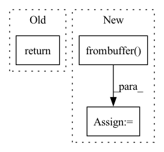

Pattern ID :13035

Before Change
map_ = cv2.imdecode(map_, cv2.IMREAD_UNCHANGED)
assert_type(map_, np.ndarray)
assert_ndim(map_, 3)
return map_
After Change
pass
if elevation is not None:
elevation = np.frombuffer(elevation.read(), np.uint8) // TODO: handle values above 255?
elevation = cv2.imdecode(elevation, cv2.IMREAD_GRAYSCALE)
assert_type(elevation, np.ndarray)
assert_ndim(elevation, 2) // Grayscale, no color channels
In pattern: SUPERPATTERN
Frequency: 3
Non-data size: 3
Instances
Fragment ID: 44031711
Project Name: hmakelin/gisnav
Commit Name: d06321397c4da525c87563591545cc8a57c8176b
Time: 2022-09-09
Author: hmakelin@protonmail.com
File Name: gisnav/wms.py
M Class Name: WMSClient
N Class Name: WMSClient
M Method Name: worker(7)
N Method Name: worker(6)
M Parent Class:
N Parent Class:
M File Name: gisnav/wms.py
N File Name: gisnav/wms.py
M Start Line: 89
M End Line: 92
N Start Line: 67
N End Line: 115
'>
Before Change
if img is None:
raise ValueError("Image can not be read")
else:
return img
def imread_pillow(im_path: str) -> TImage:
After Change
if isinstance(im_src, (Path, str)):
image = cv2.imread(str(im_src), cv2.IMREAD_UNCHANGED)
elif isinstance(im_src, bytes):
image_raw = np.frombuffer(im_src, np.uint8)
image = cv2.imdecode(image_raw, cv2.IMREAD_UNCHANGED)
else:
raise TypeError("Unsupported type")
'>
Fragment ID: 44031707
Project Name: oml-team/open-metric-learning
Commit Name: e939fb26411ed6c14044930dd11d701f6f30eb7c
Time: 2022-08-09
Author: aleksei.v.tarasov@gmail.com
File Name: oml/utils/images/images.py
M Class Name: AnonimousClass
N Class Name: AnonimousClass
M Method Name: imread_cv2(1)
N Method Name: imread_cv2(1)
M Parent Class:
N Parent Class:
M File Name: oml/utils/images/images.py
N File Name: oml/utils/images/images.py
M Start Line: 25
M End Line: 32
N Start Line: 27
N End Line: 36
'>
Before Change
import cv2
if hasattr(file_or_buff, "read"):
return cv2.imdecode(file_or_buff.read(), 1)
if isinstance(file_or_buff, str):
return cv2.imread(file_or_buff)
return cv2.imdecode(file_or_buff, 1)
After Change
if hasattr(file_or_buff, "read"):
buff = np.frombuffer(file_or_buff.read(), dtype=np.uint8)
else:
buff = np.frombuffer(file_or_buff, dtype=np.uint8)
return cv2.imdecode(buff, 1)
@register(name="builtin/image_dump")
'>
Fragment ID: 44031715
Project Name: towhee-io/towhee
Commit Name: 2f39b9e8b2487427c10f4c7963937ed2103c4d91
Time: 2022-03-24
Author: jie.hou@zilliz.com
File Name: towhee/hub/builtin/operators/computer_vision.py
M Class Name: AnonimousClass
N Class Name: AnonimousClass
M Method Name: image_load(1)
N Method Name: image_load(1)
M Parent Class:
N Parent Class:
M File Name: towhee/hub/builtin/operators/computer_vision.py
N File Name: towhee/hub/builtin/operators/computer_vision.py
M Start Line: 47
M End Line: 50
N Start Line: 47
N End Line: 53